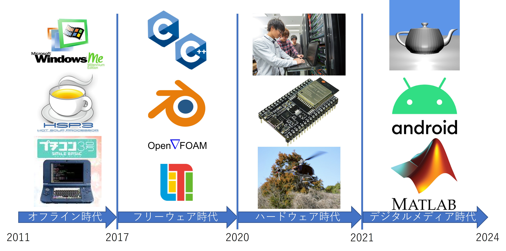

学歴
- 法政大学高等学校 [2017/04～2020/03]
- 法政大学 情報科学部 ディジタルメディア学科 [2020/04～2024/03]
- 法政大学 情報科学研究科 [2024/04～2026/03 見込]
保有資格
- Paiza S ランク 取得年月: 2024/08
- 応用情報技術者試験 合格年月: 2024/07
- TOEIC 935 点 (Listening: 470, Reading: 465) 取得年月: 2023/10
- TOEFL iBT 84 点 (Listening: 22, Reading: 26, Speaking: 15, Writing: 21) 取得年月: 2023/07
- CG エンジニア検定 エキスパート 取得年月: 2022/12
- 普通自動車第一種運転免許 取得年月: 2022/03
- 剣道二段
学業
大学の成績は学部でもトップクラスであり、大学卒業時点での合計 GPA は 3.61 、学部首席で卒業いたしました。特にプログラミングの授業は全て S 評価を取得しました。卒業論文では「曲線近傍を移動する視点から見えるステレオ自由視点画像の高速生成」というタイトルの研究をおこないました。 研究では NeRF という 3D 技術を使いました。以下の画像をクリックすると Web ブラウザ上で NeRF サンプルを見ることができます。(Developed by Zhiqin Chen et al.)


取り組み略歴

-
2011 年(10 歳):
祖母からもらった本を読み、初めてのプログラミング (言語: HSP) -
2011 年～2017 年(10 歳～16 歳):
インターネットに触れる機会が少なくオフラインでプログラミング -
2017 年～2020 年(16 歳～18 歳):
新しく手に入れたノートパソコンで C++ やフリーウェアに触れる -
2020 年～2021 年(18 歳～20 歳):
CIS RATに加入し法政大学情報科学部が保有するサーバー・ネットワークを管理。ESP32 や Raspberry Pi をオンラインで購入し触れる。筑波大学でのドローンプロジェクトへも参加 -
2021 年～2024 年(20 歳～22 歳):
3D 映像技術に対して興味を持ち、3D レンダラーを自作。Android, iOS のモバイルアプリをアルバイト先で開発。授業で MATLAB にも触れる
成果物
概要：
画像をアップロードするとそれに写っているオブジェクトを認識してくれるサイト
背景/工夫した点/苦労した点： オブジェクト認識技術を Web
上で体験できるようにしたかったことがきっかけです。工夫点はオンライン上に公開する上で最低限のセキュリティ対策を施した点です。例えば通信盗聴の防止、コマンドインジェクション対策、データ流出防止対策、過度なアクセス数の対策などを施しました。苦労した点は
AWS の使い方を学ぶ必要があったことです。
得たこと: Web システムの知識を学びました。
公開: 構築手順を近々公開予定
| 項目 | 内容 |
|---|---|
| 関連技術 | Apache HTTP Server PHP Yolov3 |
| 期間 | 2020/07~2020/08 |
| 人数 | 1 人 |
| 担当 | 設計・実装・テストの全て |
得たこと: Web システムの知識を学びました。
公開: 構築手順を近々公開予定
概要： 3D ポリゴンを陰影付きで描画するソフトウェア
関連技術: レイトレーシング C++ GPU によるハードウェア支援
期間： 2022/04~2020/08
人数： 1 人
担当： 設計・実装・テストの全て
背景/工夫した点/苦労した点：
大学の個人プロジェクトを背景に作成しました。工夫した点は3DオブジェクトデータをSTLファイルから読み込めるようにしたことです。苦労した点は3Dオブジェクトデータを高速に扱うデータ構造(kD木)を C++ で実装したことです。
得たこと: 3DCGの知識、ハードウェア支援の実装方法と効果を学びました。
公開: ソースコードをGitHubにて公開
関連技術: レイトレーシング C++ GPU によるハードウェア支援
期間： 2022/04~2020/08
人数： 1 人
担当： 設計・実装・テストの全て
背景/工夫した点/苦労した点：
大学の個人プロジェクトを背景に作成しました。工夫した点は3DオブジェクトデータをSTLファイルから読み込めるようにしたことです。苦労した点は3Dオブジェクトデータを高速に扱うデータ構造(kD木)を C++ で実装したことです。
得たこと: 3DCGの知識、ハードウェア支援の実装方法と効果を学びました。
公開: ソースコードをGitHubにて公開
概要: Pygame ライブラリでゲームを 2 つ開発しました。
関連技術: Python Pygame
期間: 2020/09~2021/01
人数: 1 人
担当: 設計・実装・テストの全て
背景/工夫した点/苦労した点: 大学の Python 授業で出された課題のために開発しました。工夫点はロジックと描画機能を分離して実装したことで、Pygame 以外のライブラリへの移植性を高めたことです。苦労した点はプログラムを読みやすいものにするために、クラスや関数を設計したことです。
得たこと: Python の使い方と読みやすいプログラムの書き方を学びました。
公開: ソースコードを GitHub 上にて公開しています。迷路ゲーム, マインスイーパー
関連技術: Python Pygame
期間: 2020/09~2021/01
人数: 1 人
担当: 設計・実装・テストの全て
背景/工夫した点/苦労した点: 大学の Python 授業で出された課題のために開発しました。工夫点はロジックと描画機能を分離して実装したことで、Pygame 以外のライブラリへの移植性を高めたことです。苦労した点はプログラムを読みやすいものにするために、クラスや関数を設計したことです。
得たこと: Python の使い方と読みやすいプログラムの書き方を学びました。
公開: ソースコードを GitHub 上にて公開しています。迷路ゲーム, マインスイーパー
概要: RESAS API
のキーを入力すると都道府県人口の推移グラフを表示します。
関連技術: React Next.js
期間: 2024/05/27~2024/06/04
人数: 1 人
担当: 設計・実装の全て
背景/工夫した点/苦労した点: 株式会社ゆめみ様のコーディングテストの一環で作成しました。 工夫点は API Key をサーバー側に保存せず、利用の旅入力してもらうことでサーバー側での Key 流出リスクを低減したことです。 苦労した点はプログラムを読みやすいものにするために、クラスや関数を設計したことです。
得たこと: Next.js を通じて React の仕組みや TypeScript など Web フロントエンドの基礎的な知識を学びました。
公開: ソースコードを GitHub 上にて公開しています。ソースコード, 実際のサイト
関連技術: React Next.js
期間: 2024/05/27~2024/06/04
人数: 1 人
担当: 設計・実装の全て
背景/工夫した点/苦労した点: 株式会社ゆめみ様のコーディングテストの一環で作成しました。 工夫点は API Key をサーバー側に保存せず、利用の旅入力してもらうことでサーバー側での Key 流出リスクを低減したことです。 苦労した点はプログラムを読みやすいものにするために、クラスや関数を設計したことです。
得たこと: Next.js を通じて React の仕組みや TypeScript など Web フロントエンドの基礎的な知識を学びました。
公開: ソースコードを GitHub 上にて公開しています。ソースコード, 実際のサイト
概要: 画像を 2 つアップロードすると、PSNR, SSIM, LPIPS で比較できます。
関連技術: React Next.js
期間: 2025/03/27
人数: 1 人
担当: 設計・実装の全て
背景/工夫した点/苦労した点: よく使う比較の手間を減らすために Web ブラウザ上で比較できるようにしました。 StreamLit を使うことで無料でデプロイすることができました。 StreamLit を習得することが大変でした。
得たこと: StreamLit を使って Python だけで動的 Web サイトを構築、デプロイする方法を学びました。
公開: ソースコードを GitHub 上にて公開しています。ソースコード, 実際のサイト
関連技術: React Next.js
期間: 2025/03/27
人数: 1 人
担当: 設計・実装の全て
背景/工夫した点/苦労した点: よく使う比較の手間を減らすために Web ブラウザ上で比較できるようにしました。 StreamLit を使うことで無料でデプロイすることができました。 StreamLit を習得することが大変でした。
得たこと: StreamLit を使って Python だけで動的 Web サイトを構築、デプロイする方法を学びました。
公開: ソースコードを GitHub 上にて公開しています。ソースコード, 実際のサイト
概要: レンチキュラー用の画像を PC や
スマホ上で表示・編集できます。
関連技術: React Next.js
期間: 2024/11
人数: 1 人
担当: 設計・実装の全て
背景/工夫した点/苦労した点: 先輩を手助けする一環で作成しました。 工夫点は iPhone や Android、 PC 上でも同じ動作をさせるため、ネイティブアプリではなく Web アプリを作成するようにしたことです。またいくら拡大しても品質劣化しない SVG 形式を採用したことも工夫店の一つです。 苦労した点はスマホでの編集を可能にするためにタッチに対応させたことです。
得たこと: Next.js を通じて React の仕組みや TypeScript など Web フロントエンドの基礎的な知識を学びました。
公開: ソースコードを GitHub 上にて公開しています。ソースコード, 実際のサイト
関連技術: React Next.js
期間: 2024/11
人数: 1 人
担当: 設計・実装の全て
背景/工夫した点/苦労した点: 先輩を手助けする一環で作成しました。 工夫点は iPhone や Android、 PC 上でも同じ動作をさせるため、ネイティブアプリではなく Web アプリを作成するようにしたことです。またいくら拡大しても品質劣化しない SVG 形式を採用したことも工夫店の一つです。 苦労した点はスマホでの編集を可能にするためにタッチに対応させたことです。
得たこと: Next.js を通じて React の仕組みや TypeScript など Web フロントエンドの基礎的な知識を学びました。
公開: ソースコードを GitHub 上にて公開しています。ソースコード, 実際のサイト
その他
- 大学の MATLAB 授業にて光学式文字認識プログラムやモールス信号解読(音声->文字)プログラムを開発
- 12 歳のときにホットスーププロセッサ(HSP)というプログラミング言語で画像編集ソフトを開発
- ノート PC の故障によるデータ消失を受けて、自宅ファイルサーバを RaspberryPi + 外部 HDD で構築
- 無線機能付きマイクロチップ(ESP32)にソフトウェアを組み込み、 Wi-Fi 経由で LED を操作できるようにした
- ModelSim を使ってパイプラインCPU を設計し動作シミュレーションをした
- デスクトップパソコンを部品から組み立て
インターンシップ経験
- ソニー株式会社 Research&Development 部門(3週間)
- 株式会社Appify Technologies(現: 株式会社Stack) (5日間, 2022/08 以降はアルバイトとして雇用され現在も勤務)
- 楽天グループ株式会社 (5日間)
- 株式会社サイバーエージェント (2日間)
- 株式会社バンダイナムコスタジオ (5日間)
- 株式会社アクシス (1日)
- NTTデータ先端技術株式会社 (5日間)
- 三菱電機エンジニアリング株式会社 (1日)
外部リンク